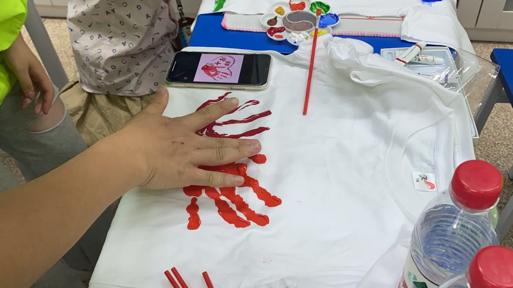
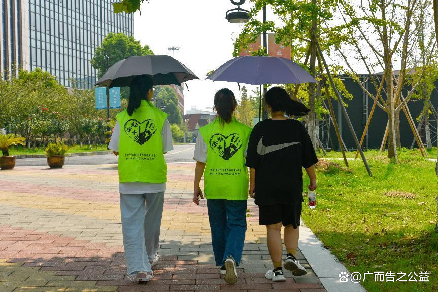
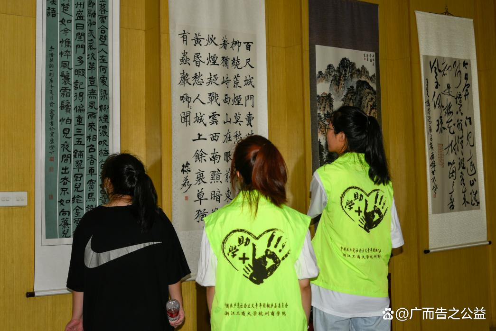

项目介绍
“助学+”项目由浙江工商大学杭州商学院团队发起，长期围绕桐庐县贫困留守儿童开展公益助学，连接大学生志愿者、爱心企业与地方资源。
项目从家访回访、成长陪伴、科普课堂到公益活动执行，既提供物资支持，也关注孩子的学习、生活与心理状态。团队成立以来已走访数百位孩子，长期资助 72 位贫困儿童，并开展 20+ 场公益活动。
主线任务
- 项目策划：负责公益助学项目的执行规划、活动节奏设计与成员分工，落地 10+ 场公益活动。
- 家访回访：完成每场家庭回访的跟踪记录，持续记录孩子学习、生活、家庭支持与成长变化。
- 资源协同：对接社企合作与赞助资源，累计拉取资源 2W+，推动物资支持与志愿服务落地。
- 内容传播：整理活动影像与故事素材，产出 5 支影片、10 篇推文以及 2 本画册。
活动相册
如果人间有星星，那一定是他们的眼睛。 这些现场照片也保留了项目最真实的温度：有走进孩子家中的家访时刻，也有一起去博物馆参加活动、动手做手工的陪伴片段。



报道与影像
百家号：《流动少年宫，助学在路上》
浙江在线：《挑战校领导？杭商院这个学生团队赢得两千元爱心基金》
微信公众号：《喜报丨我校两支志愿服务团队入选2022年“七彩假期”志愿服务示范团队》
微信公众号：《倾心助学，倾力筑梦》
公益中国网相关报道

